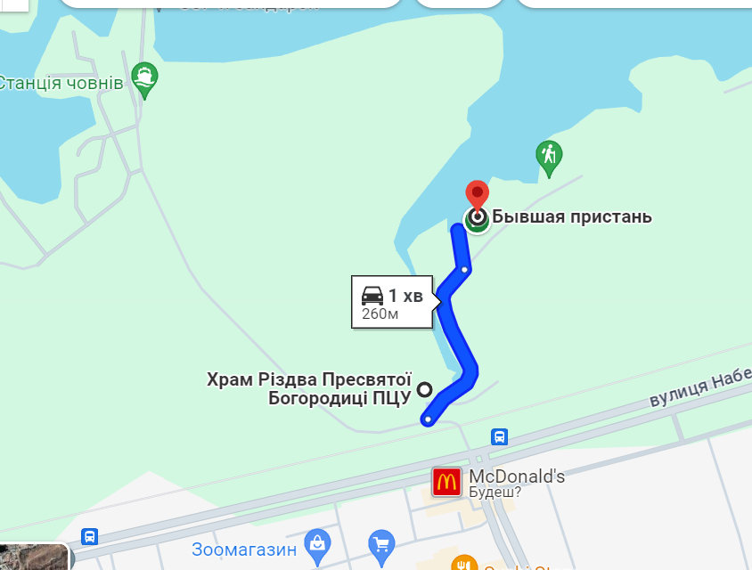
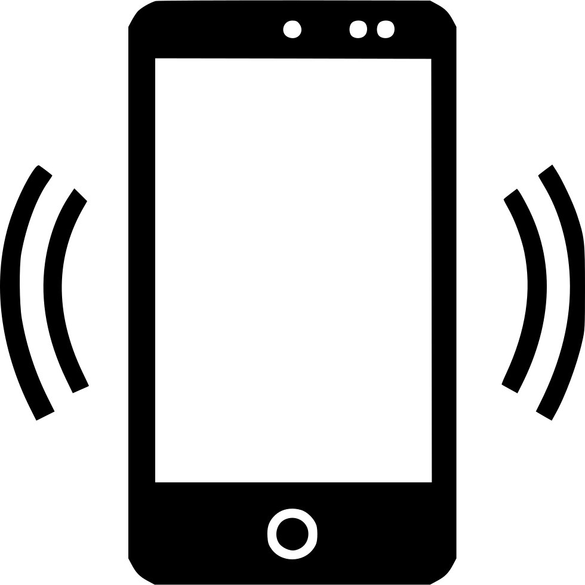

<!DOCTYPE html>
<html lang="uk">
<head>
  <meta charset="UTF-8">
  <title>Kayak Club Dnipro</title>
  <link rel="stylesheet" href="/css\style.css">
</head>
<!--Гео-посилання пункту (ів) прокату з адресами-->
<!--Графік роботи прокату:-->
<!--З квітня по жовтень включно: 8:00 - 20:00 (без вихідних)-->
<!--З листопада по березень включно: 12:00 - 18:00 (без вихідних)-->
<!--Бронювання плавзасобів для прогулянок на воді +380 (96) 674-83-38 -->
<!--ТГ-->
<!-- -->
<!--Для отримання анонсів організованих виїздних заходів завчасно долучайтесь до спільноти друзів в фб, інста, тг-->


<!--Як нас знайти:     Підпишіться на нас в соц. мережах:-->
<!-- https://www.youtube.com/channel/UCk3lJYS_Mu5sXTbI-UnHcgg-->
<!-- https://t.me/KayakClubDnipro-->
<!-- https://www.instagram.com/kayakclubdnipro/-->
<!-- https://www.facebook.com/kayakclubdn/ не працює-->
<!--<div class='tn-atom'><a href="TEL: 066 896 77 47"style="color: inherit">+380 (66) 896-77-47</a></div>-->
<!--<div class='tn-atom'><a href="TEL: 096 674 83 38"style="color: inherit">+380 (96) 674-83-38</a></div>-->
<!--<div class='tn-atom'><a href="https://www.google.com/maps/place/Kayak+Club+Dnipro/@48.4889846,34.9148871,15z/data=!4m5!3m4!1s0x0:0xcd7cec27ab6a8cdc!8m2!3d48.4889846!4d34.9148871"target="_blank"style="color: inherit">м. Дніпро, вул. Набережна Заводська, 94-л</a></div>-->
<!--<a class='tn-atom' href="https://www.google.com/maps?q=%D0%B3.+%D0%94%D0%BD%D0%B5%D0%BF%D1%80,+%D1%83%D0%BB+%D0%9D%D0%B0%D0%B1%D0%B5%D1%80%D0%B5%D0%B6%D0%BD%D0%B0+%D0%97%D0%B0%D0%B2%D0%BE%D0%B4%D1%81%D1%8C%D0%BA%D0%B0,+94%D0%9B&amp;rlz=1C1CHBD_ruUA898UA898&amp;um=1&amp;ie=UTF-8&amp;sa=X&amp;ved=2ahUKEwiFr46z2oLsAhVGxosKHY1JDTkQ_AUoAXoECAwQAw" target="_blank" ></a>-->
<!--email: kayakclubdp@gmail.com-->

<!--<table>-->
<!--  <tr>-->
<!--    <td colspan="2">-->
<!--      -->
<!--    </td>-->
<!--    <td colspan="2">-->
<!--      Прокат каяків і сапбордів в Дніпрі-->
<!--    </td>-->
<!--  </tr>-->
<!--  <tr>-->
<!--    <td>Станіслав</td>-->

<!--  </tr>-->
<!--  <tr>-->
<!--    <td>Засновник, гід-інструктор. Ідейний натхненник проекту.</td>-->
<!--    <td>Наша мета - Дарувати Вам дух Пригоди!</td>-->
<!--  </tr>-->
<!--</table>-->

<!-- Привіт! Я, Станіслав Колкунов, в листопаді 2019 заснував компанію по организації відпочинку на воді Kayak Club Dnipro.-->
<!--Новий тренд на здоровий спосіб життя, активний відпочинок з сім"єю та друзями, подорожі в красиві місця України та інщі країни, стрімко розвивається, завдяки таким компаніям як наша.-->
<!--Основним напрямком діяльности нашої компанії є прокат та оренда каяків, байдарок та САП дошок в м.Дніпро на ж\м Комунар (Покровський), Червоний Камінь, Парус. Також ми організовуємо походи, екскурсії на каяках, байдарках, корпоративні свята, тімбілдінги, дні народження, в т. ч. дитячі дні народження.-->
<!--У нас Ви легко придбаєте подарунковий сертифікат, абонемент та карту знижок.-->
<!--Наша адреса: 49000 Україна, Дніпропетровська обл.., м.Дніпро, вул.Набережна Заводська, 94Л, Човнова станція «Комунарівець»-->
<!--Наші телефони: 0966748338-->

<!--Щоб розмістити блоки в одну лінію, можна використовувати властивість display: inline-block для елементів div. Це дозволить елементам обтікати один одного.-->

<!--Щоб зменшити вертикальний розмір блоків, можна використовувати властивість height: auto. Це дозволить елементам приймати висоту свого вмісту.-->

<!--Ось один із варіантів, як можна реалізувати це:-->

<!-- https://maps.app.goo.gl/Q3xprd8ttg33i35J9 -->
<footer>
  <div class="footer-info">
    <div class="footer-info-item">
      <h3>Гео-локація</h3>
      <ul class="footer-info-list">
        <li><a href="https://maps.app.goo.gl/Q3xprd8ttg33i35J9">
  Геолокація</a></li>
        <li><a href="img/new_location_KCD.png"> Ми на мапі</a></li>
        <li>мр Червоний Камінь, ж/м Комунар, Дніпро</li>
      </ul>
    </div>
    <div class="footer-info-item">
      <h3>Графік роботи</h3>
      <p>З квітня по жовтень включно <br>
        8:00 - 20:00 (без вихідних)</p>
      <p>З листопада по березень включно <br>
        12:00 - 18:00 (без вихідних)</p>


    </div>
    <div class="footer-info-item">
      <h3>Бронювання</h3>

      <p><a class="contact-link" href="tel:+38096 674-83-38">096 674-83-38</a>
        </p>
      <p>
  <a href="https://t.me/kayak_klub">
    Telegram
  </a>

</p>
<!--      <p>додати іконки та перехід по посиланню    <a class='tn-atom' href='tel:+38096) 674-83-38'>+380 (66) 896-77-47 </a>
 + вайбер   0 (96) 674-83-38-->
        <p><a href='tel:+38096 674-83-38'>
  Viber</a> </p>
      <a href="https://www.viber.com/invite/" target="_blank">
  
</a>
<a href="tel:+380966748338">(+380) 96 674-83-38</a>
<!--  Телефон: +380 (96) 674-83-38    footer-info-item "> відредагувати класс на вирівнювання по верхньому краю-->
     </div>
    <div class="footer-info-item">
      <h3>Ми в соц мережах:</h3>
      <p><a href="@kayakclubdnipro">Facebook: </a></p>
      <p><a href="@kayakclubdnipro">Instagram:</a> </p>
      <p><a href="@kayakclubdnipro">Telegram:</a> </p>
      <p> <a href="https://www.youtube.com/channel/UCk3lJYS_Mu5sXTbI-UnHcgg">Youtube </a>      </p>
<!--         <p>додати іконки та перехід по посиланню       </p>-->
    </div>
  </div>
    <div class="menu-item">

             <a href="index.html">Головна</a>
             <a href="assortment_2.html">Ціни</a>
             <a href="hike.html">Походи</a>
<!--            <li class="menu-item btn"><a href="rewiew.html">Відгуки</a></li>-->
             <a href="Social_Projects.html">Пільги</a>
             <a href="about.html">Про нас</a>
    </div>

</footer>
